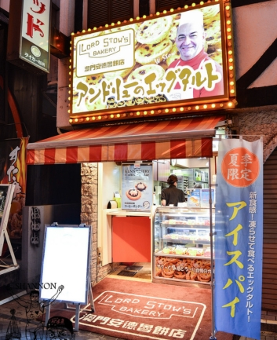
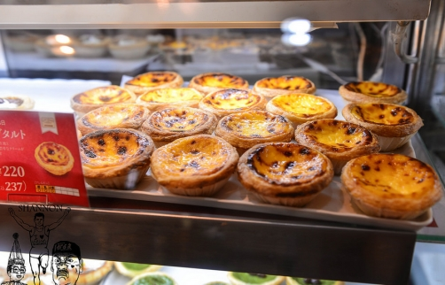

(金久右衛門→激安殿堂→安德魯餅店→大創→炸雞)
示意圖
アンドリューのエッグタルト Lord Stow's bakery 澳門安德魯餅店 [官網]
營業時間：10:00~24:00

原味257

巧克力270
草莓207
DAISO 大創 なんば戎橋店 [官網]
營業時間：10:00~23:00
金のとりから なんば戎橋店 [官網]
營業時間：11:00~22:00
日本國產雞肉專門業者開設

金のとりから 金炸雞 (雞柳條, 小份量就滿多的)

醬料
オリジナルスパイス 原味香辣料 人氣No.1
マヨネーズ 蛋黃醬
スイートチリソース 甜辣醬
レモン 檸檬
モンゴルの岩塩 蒙古岩鹽
チョコレートソース 巧克力醬
カレー 咖哩 (關東限定)
バーベキューソース 烤肉醬 (關西限定)
柚子ポン酢 柚子醬橙子 (關西限定)
うめドレッシング 梅花敷料
ハニーマスタードソース 蜂蜜芥末醬
レッドペッパー 辣椒

戎橋店限定: Garlic Butter大蒜奶油醬

銀のとりから 銀炸雞 (炸雞皮, 冷的!?)